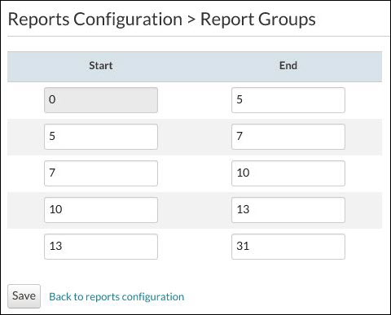

Configuring Report Groups
Use the
Reports Configuration > Report Groups page to define the number of days in the
Applications in the same state for field in the Application Summary report.
-
Repeat steps 2 and 3 for each row. The number you enter in the
End column must be entered in the next row under the
Start column as seen in the following figure.

Example of how to configure information for the Application Summary Report
The information as entered in the End column in the previous figure translates into 1, 2, 3, 4, and 5 days, and days over 5 being displayed in the Application Summary report fields. For example: